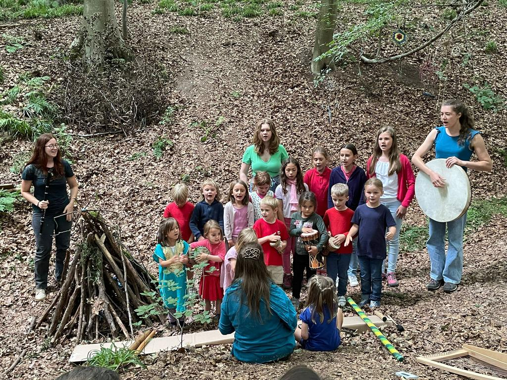
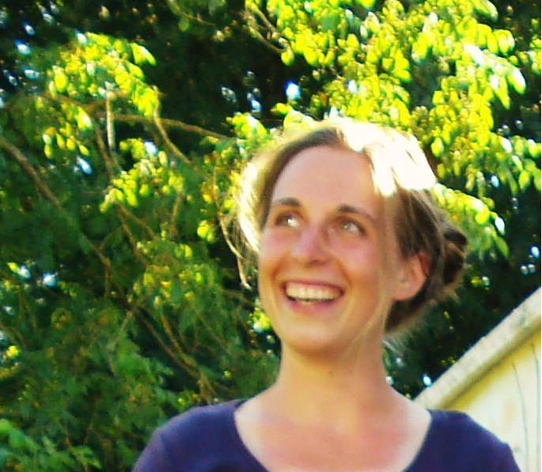

ARTS EnChantés ASBL


Qui sommes nous ?

Les stages sont proposés par Alisée Frippiat et Pauline Bossuroy, musiciennes et enseignantes
qualifiées, passionnées par la musique, l'art et la pédagogie.
Au cours d’un stage aux Arts EnChantés, les enfants voyagent dans l'imaginaire à travers les arts, principalement la musique,
mais également les arts plastiques, la danse et les arts de la parole, dans les projets de
spectacles autour d’un conte.
L’enfant, dans un espace pluridisciplinaire, se découvre un artiste à multiples talents.
Il aura l’occasion de pratiquer les arts qu’il connait dans un contexte particulier, et d’en découvrir
d’autres, qu’il aura peut-être envie d’approfondir par la suite.
Le spectacle de fin de stage permet de créer une mise en
scène unique avec tout ce qui a été exploré pendant la
semaine. Le spectacle, se construisant au fur et à mesure
de la semaine, sur base entre autres de ce que les enfants amènent
d’eux-mêmes, devient une véritable création collective
qui porte les enfants vers un objectif de fin de stage
ayant du sens, dont ils se sentent sujets, créateurs et
acteurs.
Par les arts, et par la réalisation d’un spectacle commun,
l’enfant développe non seulement ses capacités cognitives,
psychomotrices et créatives, mais il participe aussi à un
projet de vie au sein d’un groupe. En exprimant ses
sentiments à travers les arts, et dans un projet commun,
l’enfant partage avec ses pairs des moments uniques et
crée des liens.

Alisée Frippiat obtient son diplôme de Master en harpe
au Koninklijk Conservatorium Brussel, avec la plus grande
distinction, dans la classe de Jana Bouskova.
Alisée a remporté de nombreux prix, notamment un premier
prix au Concours International de harpe celtique de
Vresse-sur Semois et un premier prix au Concours National
« Dexia Classics 2007», dans la discipline harpe.
Elle est également finaliste du Concours International
de harpe « Félix Godefroid 2010 », dans la catégorie
« soliste ». Elle est lauréate de la Fondation Artistique
Mathilde E. Horlait-Dapsens.
Alisée se produit régulièrement en concert, en Belgique et à l’étranger,
en soliste et en musique de chambre. Elle apprécie particulièrement les collaborations avec chanteurs et chorales.
Elle a notamment accompagné les chœurs d'enfants et de jeunes de La Monnaie en accompagnant
la Choraline dans différentes œuvres pour chœur et harpe.
Comme harpiste freelance, elle se produit avec
différents orchestres et ensembles de Belgique. Elle a
notamment joué avec l’orchestre de l’opéra de La Monnaie,
l’orchestre de la Musique Royale des Guides, l’ensemble
Sturm und Klang, l’orchestre du XXIème siècle, ainsi que
pour les productions d’Ars Lyrica, sous la direction de Patrick Leterme, pour les comédies musicales
« Le Magicien d’Oz », « La Mélodie du Bonheur » et « Les Parapluies de Cherbourg ».
Pendant 4 ans, elle à joué avec le prestigieux Czech Philharmonic
Orchestra à Prague, notamment sous la direction de Jiří Belohlávek, Krzysztof Urbanski, Jakub Hrůša
et Manfred Honeck.
En 2015, elle crée l’asbl « Arts EnChantés », qui organise des événements
dans lesquels se rencontrent différents arts, notamment des stages
pluriartistiques pour enfants et des concerts-contés. Elle y
enseigne actuellement la harpe, ainsi qu'aux académies de musique
d'Ixelles et de la Ville de Bruxelles.

Pauline Bossuroy
: Tisser des ponts entre musique, arts, relations humaines et connexion à la nature... voilà ce qui m'anime.
La musique est un fil d'or avec lequel j'aime depuis toujours tisser du lien, rencontrer le monde, m'exprimer et créer.
Je m’initie dès l’enfance à la pratique musicale (flûte traversière, accordéon diatonique). J’explore les musiques et danses
trad-folk d’Europe et me découvre une passion pour cet univers.
De 2008 à 2014, je me forme en Belgique à la psychologie et à la musicothérapie. Ma pratique s'enrichit depuis d'expériences
et de formations permettant d'affiner mon ancrage dans l’expression corporelle, chantée, rythmée et dansée.
En 2015, je quitte ma terre natale belge pour une nouvelle terre d'accueil plus au sud, dans les montagnes des Hautes-Alpes.
Je m'engage alors pour 7 années comme pédagogue petite enfance, dans la joie d'accompagner les enfants de 2 à 6 ans dans leur éveil
la vie, par une pédagogie active reliée aux cycles de la nature;
Dès 2023, je remets la musicothérapie au centre de ma pratique professionnelle. J’ai de la joie aujourd’hui à faciliter des espaces
où la musique, le son, le rythme et le chant s'invitent comme des voies d'accès privilégiées pour ouvrir et restaurer des canaux de communication.
Je chemine depuis 2019 dans une approche de connexion profonde à la nature inspirée des éléments culturels fondamentaux et communs aux
peuples racines à travers le monde, gardiens de tous temps d'une relation harmonieuse avec leur environnement. S'opère par cette voie un
profond changement de regard, de posture et de conscience qui nourrit mon enthousiasme à vivre et partager ses chemins de reconnexion au vivant.
Je fonde en 2020 l'association Musicalma pour laquelle je mets au service mes compétences en musicothérapie, éveil musical, chant,
pratique instrumentale et connexion profonde à la nature.
Je co-crée en 2015 l’asbl Arts EnChantés pour développer des stages artistiques et pluri-disciplinaires pour enfants.